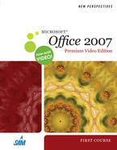

Microsoft Office - Introduction
Last revised:
December 07, 2010
Project Explanations:
- Additional Resources
- Links to valuable resources used during class and to complete ticket projects and assignments.
- Assignments
- Unit projects designed to be completed outside of class that demonstrate an understanding
of concepts from the unit.
Many assignments will be submitted as attachments using your MSTC email account to sarah.huibregtse@mstc.edu - Instructor Notes
- Highlight key concepts that will be covered during the Unit. They also provide example code and notes regarding inclass HTML projects.
|
Class Session |
Tentative Topics | Assignments | ||
|
August 26 |
Instructor Notes: * Syllabus * H: drive, I: drive, MyMSTC, online Email, * Sarah's web site, Course web page * File Management: ~ File names, folder names, file extensions, My Computer, making new folders, Selecting, deleting, renaming, moving, copying files, Using the Windows clipboard to move and copy files, comparing delete vs. recycle * Using Email * Using the Internet * File Management XP / File Management Win 7 * Open-Save-Print XP / Open-Save-Print Win 7 Additional Resources: * Email Etiquette Handout * Intro to Windows XP / Intro to Windows 7 * Ergonomics Handout * Copyright Laws Handout * Computer Applications Handout For Next Week: * eBook Available: approximately $65 / semester |
Due Sept 2: * Internet, Email, File Management Assignment * Internet & Email Worksheet (5pts) * File Management Worksheet (30pts) * Student Files link |
||
|
Sept 2 |
Instructor Notes: * Word Tutorial 1 - Creating a Document (includes Office 2010 changes) Additional Resources: * Competency Checklist - Microsoft Word * Word 2007 Tutorial - Florida Gulf Coast University |
Due Sept 9: * Word Tutorial 1 Assignment |
||
|
|
Sept 9 |
Instructor Notes: * Word Tutorial 2 - Editing and Formatting (includes Office 2010 changes) Additional Resources: * Word 2007 Student Files |
Due Sept 16: * Word Tutorial 2 Assignment |
|
|
Sept 16 |
Instructor Notes: * Word Tutorial 3 - Multi-Page Document (includes Office 2010 changes) |
|
||
|
Sept 23 |
* Word Tutorial 3 - Multi-Page Document Continued |
Due Sept 30: * Word Tutorial 3 Assignment |
||
|
Sept 30 |
Instructor Notes: * Word Tutorial 4 - Desktop Publishing (includes Office 2010 changes) |
|
||
|
October 7 |
* Word Tutorial 4 - Desktop Publishing Continued |
Due October 14: * Word Tutorial 4 Assignment |
||
|
October 14 |
Instructor Notes: * Excel Tutorial 1 - Excel Basics Additional Resources: * Excel 2007 Student Data Files |
Due October 21: * Excel Tutorial 1 Assignment |
||
|
October 21 |
Instructor Notes: * Excel Tutorial 2 - Formatting a Worksheet |
Due October 28: * Excel Tutorial 2 Assignment |
||
|
October 28 |
Instructor Notes: * Excel Tutorial 3 - Formulas & Functions * Excel Tutorial 4 - Charts |
Due November 4: * Excel Tutorial 3 Assignment |
||
|
Nov 4 |
Instructor Notes: * Inclass Excel Final Project |
Due November 11: * Last day to submit Excel Extra Credit * Read & complete AC 1 - 19 (Bring Belmont Database to class) |
||
|
Nov 11 |
Instructor Notes: * Access Tutorial 1 Additional Resources: * Access 2007 Student Data Files * Introduction to Microsoft Access Online Tutorial |
Due November 18: * Last day to submit Excel Regrades * Access Tutorial 1 Assignment |
||
|
Nov 18 |
Instructor Notes: * Access Tutorial 2 * Access Database Concepts Graphic |
Due December 2: * Access Tutorial 2 Assignment |
||
|
Nov 25 |
Holiday - Thanksgiving |
|
||
|
Dec 2 |
Instructor Notes: * Access Tutorial 3 |
Due December 9: * Access Tutorial 3 Assignment |
||
|
Dec 9 |
Instructor Notes: * PowerPoint Tutorial 1 - PowerPoint Basics * PowerPoint Tutorial 2 - Modifying Text and Graphics * PowerPoint Tutorial 3 - Special Effects Additional Resources: * PowerPoint 2007 Student Data Files |
Due December 16: * PowerPoint Tutorial 1 & 2 Assignments |
||
|
Dec 16 |
Instructor Notes: * Inclass PowerPoint Final Project All assignments and regrades must be submitted via email by 9:30pm TONIGHT! |
Get a Voki now! |
| Keep your computer problem free | |
| AVG Virus Scanning | FREE (to home users) virus scanning software. My favorite free anti-virus program. |
| Avast Virus Scanning | FREE (to home users) virus scanning software. Not as good as Norton, but much better than nothing. |
| Norton AntiVirus (Symantec) | The (current) king of antivirus software. Includes some spyware and adware scanning. |
| Spybot Search & Destroy | Shareware utility to search out and remove spyware. A must have in your home arsenal. |
| Ad-Aware | Free utility to locate and remove adware from your computer. |